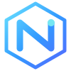

Desarrollo web
Páginas y sitios responsive que presentan tu negocio con claridad y convierten visitas en oportunidades.
Conocer servicio ↗
NEXORA DIGITALDiseñamos y desarrollamos soluciones digitales claras, útiles y preparadas para hacer crecer tu negocio.
Desde una presencia profesional en internet hasta herramientas que simplifican el trabajo diario.
Páginas y sitios responsive que presentan tu negocio con claridad y convierten visitas en oportunidades.
Conocer servicio ↗Plataformas y herramientas web para organizar procesos, información y operaciones.
Conocer servicio ↗Flujos de trabajo que reducen tareas repetitivas y ayudan a trabajar de forma más ordenada.
Conocer servicio ↗Mantenimiento, ajustes y evolución de soluciones digitales según las necesidades del negocio.
Conocer servicio ↗Una selección de productos y experimentos del ecosistema Nexora. Las demos públicas se incorporarán después de su validación.
Marca y soluciones digitales para negocios.
Concepto de plataforma para profesionales técnicos.
Interfaz de control e inventario en construcción.
Los proyectos se muestran como trabajo en desarrollo; no se presentan como productos terminados ni como demos operativas.
Un proceso sencillo, con objetivos claros y avances que puedes revisar.
Conocemos tu necesidad, tus usuarios y el resultado que buscas.
Definimos el alcance, la estructura y la solución adecuada.
Diseñamos, desarrollamos y revisamos cada parte del proyecto.
Publicamos, medimos y ajustamos según el uso y tus objetivos.
En Nexora Digital exploramos y construimos herramientas digitales enfocadas en resolver necesidades concretas. Combinamos diseño, desarrollo y aprendizaje continuo para transformar ideas en productos útiles.
Somos un proyecto digital en crecimiento. Comunicamos con transparencia el alcance y el estado de cada solución.
Cuéntanos qué necesitas. Podemos conversar sobre tu página web, herramienta o proceso digital.